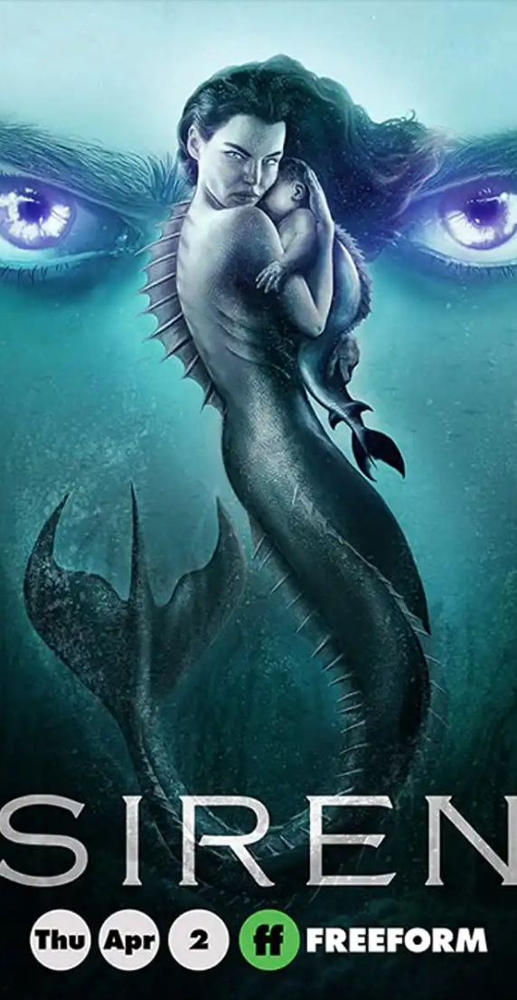
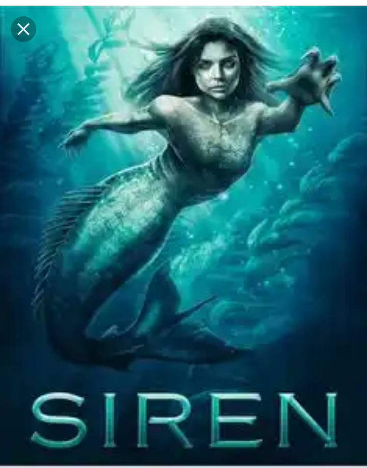

SEASON ONE: Siren is an American television drama series that premiered on Freeform on March 29, 2018. [1] The first season included 10 episodes. [2] In May 2018, the series was renewed for a second season which premiered on January 24, 2019. [3] In May 2019, the series was renewed for a third season which premiered on April 2, 2020.
The coastal town of Bristol Cove, Washington, known for its legends of once being home to
mermaids and mermen for centuries, is turned upside down when a mysterious young woman ( Eline Powell) appears and begins wreaking havoc upon the small fishing town to look for her captured older sister ( Sibongile Mlambo ) who was abducted at the hands of the local military. Marine biologists Ben ( Alex Roe) and Maddie ( Fola Evans-Akingbola ) work together to find out who and what drove this primal hunter of the deep sea to land.
Season two:
the season two bring to light the unveiling of more characters
By Season Two, more merpeople started appearing in Bristol Cove due to the pollution in the nearby waters and the sonic waves from the oil rig. Additionally, Elaine Pownall's paralysis is gradually being counteracted by Ryn's mermaid stem cells.
In Season
Season three:
The season three comes with a futher unveiling of futher events.
In Season Three, Ben, Maddie and Ryn contend with the mermaid Tia (Tiffany Lonsdale), who plans to coerce all merpeople tribes/colonies to join her in her fight to overthrow humanity. And Ryn's daughter, who has been carried by a surrogate, must be protected at all costs. To further escalate matters, Ted Pownall has finally acknowledged the existence of merpeople and seems to be on a dangerous path, just as his great-great-great grandfather had.
